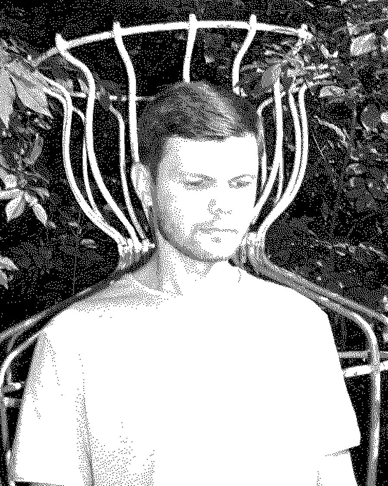

Віталій ЯнковийVitaly Yankovy
Вінниця, Україна / Бухарест, РумуніяVinnytsia, Ukraine / Bucharest, Romania
Мультидисциплінарний візуальний митець, дизайнер, дослідник та експериментальний музикант. Закінчив курс сучасного мистецтва в School of Visual Communication (Київ) у 2014 році (куратори — Катерина Бадьянова та Лада Наконечна). Пройшов документальну школу Indie Lab у Києві (2018) та програму American Art Incubator, організовану «Ізоляцією» та Zerol (2020).
Працює з відеоесеями, анімацією, 3D, рисунком, редімейдами, скульптурою та звуком. Його художня практика вибудовується навколо гібридних ландшафтів, що складаються як із фізичних, так і з цифрових об'єктів. Зараз цікавиться створенням об'єктів із залишків матеріальної культури та взаємодією між цифровою й матеріальною субстанціями крізь оптику нелюдських і постлюдських студій.
Multidisciplinary visual artist, designer, researcher, experimental musician. Finished Contemporary art course at School of visual communication (Kyiv) in 2014 (curated by Catherina Badianova and Lada Nakonechna). Finished Indie Lab documentary school in Kyiv (2018) and American Art Incubator, organized by Izolyatsia and Zerol (2020).
Work with video essays, animation, 3D, drawing, readymades, sculpture and sound. Artistic practice builds around hybrid landscapes, which consist both of physical and digital objects. Currently interested in creating objects from leftovers of material culture and relations between digital and material matter through optics of non human and post human studies.